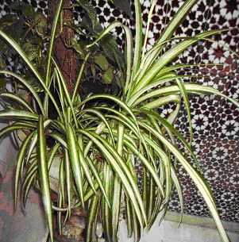

|
Chlorophytum
comosum (Thunb.) Jacques, J. Soc. Imp. Centr. Hort. 8: 345
(1862)
C.
elatum (Aiton)
R. Br.
|
Liliáceas |
| Cinta
y cinta matizada |
Hierba perenne |
|
Hierba
perenne, acaule con raices
tuberosas. Inflorescencias en racimo, pero poco vistosas. Flores hermafroditas, generalmente reducidas y pseudovivíparas transformadas en pequeñas yemas en el extremo de largos escapos florales ramificados, que forman pequeñas plántulas. Se desconoce su fructificación. |
 Foto: Alicia Maraver, 2007 |
|
Observaciones:
Existe
cierta controversia sobre la taxonomía. No está clara la
relación de esta especie con C.
elatum. Para unos se trata de la
misma especie y para otros son especies diferentes.
|
|
| Área de origen.- El género comprende unas 200 especies nativas de África austral y tropical | |
| Uso en el campus: Principalmente como tapizante.
También
hay ejemplares dispuestos en maceteros, siempre en patios. |
Localización: |
| Bibliografía Gili, G (1971) Plantas en los balcones, en los patios y en el interior |
|
| Autores:
Alicia Maraver Acosta & Carlos Romero Zarco, 2007 |
|